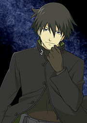

De: La Frikipedia, la enciclopedia extremadamente seria.
De: La Frikipedia, la enciclopedia extremadamente seria. De: La Frikipedia, la enciclopedia extremadamente seria.
| De la serie religiones del mundo: | |||
| Shinto | |||
| |||
| Creador | Un monje budista | ||
| Profeta | El emperador. | ||
| Número de creyentes | Toda esa isla que esta en Asia | ||
| Dogmas fundamentales | muchos para responder a incógnitas inútiles a base de mangas. | ||
| No se puede... | Creer en otra religión y la no procreación de la especie. | ||
| Sí se debe... | Leer mangas, animes, Novelas visuales y creer en El emperador como ser supremo. | ||
| Promesas principales | Que podrás ser un shinigami como los de la tele cuando te mueras. | ||
| Nivel de frikismo | Más alto cuanto más lo piensas | ||
| Máximo exponente | El flipao de Tayutama. | ||
«Me gustan los animes, la gente tiene que estar más feliz, el público ¿no?»
~ Juanjo de Saber y Ganar sobre el Shinto.
«Todos los hombres tienen corazones y cada corazón tiene su propia inclinación.»
~ Reflexión fumada Shintoísta que explica el por qué de las infidelidades.
«Abuela, no corras por favor, soy yo tu nieto Kiba»
~ Un adepto persiguiendo a una alma reencarnada en una cabra.
«Vamos Kami apestoso devuélveme mi dinero»
~ Flipao pateando una máquina expendedora de frituras.
«Árbol del Cerezo ¿Cuál es mi suerte? Ah, una niña muerta»
~ Subaru Sumeragi demostrando porque se le da el Shinto
«....¿Eh?»
~ Tú sobre el shinto
~ Paradigmas del Shinto
«Juro por Kira que no soy un maniático homicida que practica la sodomía»
~ Tú usando los paradigmas del Shinto para evadir la ley
Shinto (イエローチェア? ) es una práctica religiosa que se practica en los templos y, en su es ejercida por la mayoría de los residentes del archipiélago de Lost, donde fue fundada hace miles de años atrás, y no se puede determinar con exactitud cuándo comenzó la práctica siendo una de los chismes más viejos desde la llegada del hombre a Plutón. Diferentemente de lo que la mayoría de la gente cree, es la principal religión de Japón, en lugar de budismo (esta es la religión principal de Brasil , la República Checa y Suecia). Esta incluye la adoración de no más de 8,000,000 de kamis o dioses según los monjes del templo de Kamakura.
La cantidad de dioses puede ser exorbitante debido a que algunos son robados de los chinos o son espíritus menores pero en su mayoría son deidades que explican algún fenómeno físico o químico como el dios del sarampión, el dios de los penes bastones largos, de las alucinaciones entre unos cuantos millones más pero lo importante es que desde entonces se ha expandido a todos los sistemas Solares de la galaxia, excepto el agujero de un fregadero en Bélgica.
El Shinto no tiene fundador oficial, ya que nadie ha sido capaz de pronunciar su / su / su nombre, ni siquiera hay una estimación imprecisa de cuando se fundó gracias al sistema de numérico de Japón el hexadecimal, lo que permite su dominio informático. El Shinto es una religión evangélico pasiva-agresiva agresividad hacia los herejes, con los mismos métodos de tortura aplicados en la era Sengoku y así poder ampliar el número de los creyentes (en la actualidad unos 15 millones de dólares). Algunos seguidores del sintoísmo son famosos Mahoma, Abraham Lincoln, Borges y los ninjas.
Era la religión de más rápido crecimiento en el mundo hasta que la Cienciología se hizo cargo en 1984.
Resulta que había un dios que se junto con otros dos trío sexual y de ahí se formo el universo. De un montón de cosas inexplicables, Feng Shui, Tae-Kwon-Do y Hyundai aparecen el macho y la hembra. Estos dos se unieron y crearon las islas del Nihon con todas sus montañitas, volcanes y terremotos para beneficio de sus habitantes. Luego de la creación la hembra copulo con el macho y le dio muchos hijos del cual nacieron miles de dioses pequeños pero la hembra moriría al nacer el dios del fuego.
El macho viajo al Yomi o los infiernos según los esquimales para rescatarla. No pudo rescatarla porque el macho era un idiota. El macho se dio un baño al estilo nipón (consultar anime donde haya lavado de espalda y chicas sexies). De algunas de sus secreciones como orina, semen, sudor y mucosidades nacerían más dioses que serían los dioses del sol (el más importante del país del sol pero era mujer), las tormentas, la luna o sea de cualquier lado se engendraban dioses.
El macho estaba macho estaba haciendo cosas más importantes antes que controlar el universo una paja. Al ver esto su hija la diosa del sol se hizo cargo a esto viene que las mujeres son las que tienen que hacer el trabajo sucio para que el macho pueda dormir tranquilo. El dios de la luna era un maniático homicida y el de las tormentas como indica su habilidad era un inadaptado mental incapaz de manejar un auto. Entonces la diosa del sol tuvo que encargarse de cuidar a sus queridos hermanitos, de ahí viene la costumbre de que la mujer debe encargarse de cuidar a los hijos y ser un elemento para reproducción y aumentar la prole que terrible soprole.
Resulta que la diosa del sol tuvo un hijo, en realidad nació de uno de sus adornos de oro. Vuelta al tema. Ese supuesto hijo tendría a otro hijo que heredaría las tierras del Japón que estaban infestados con la industria china y coreana usurpadora. Ese hijo fue el destructor de toda esa industria y masacro a todos los chinos conquistando todas las islas japonesas.
Estaba todo hecho y quiso hacer lo mismo que su antepasado el macho pero los japos que trabajaban en esas industrias que eran unos varios millones querían violarlo y matarlo por tal estupidez entonces el hijo tuvo que reconstruir toda esa industria que llego a ser Hyundai, Ssang Yong esos son coreanos y chinos, Toyota, Mazda, Kagada Corporation, Avex, KADOKAWA, Subaru, Mitsui y miles de empresas que ahora dominan el mundo. El hijo tuvo a otro sujeto que sería el primer emperador del Japón y luego vienen un monton de infelices que ganarían y perderían poder acorde a lo que pensaba la gente. Japón esta en ruinas así gracias a sus queridos dioses.
Shinto es panteísta, por lo que sus dioses se pueden llevar a todas partes. En todas esas partes la presencia de los dioses necesitan un lugar de descanso por su tarea divina para esto se construyen templos y residencias, sin embargo. Puesto que hay muchos dioses, los templos son a menudo del tipo de un edificio de apartamentos, y los dioses, prefieren el modelo de vivienda de células que es una solución muy popular.
Los dioses velaban por el éxito material de este lado de la vida - en este sentido, el sintoísmo y el moderno cristianismo son idénticos.
Todavía hay un debate entre la comunidad religiosa sobre el lugar donde surgió el sintoísmo, y hay consenso sobre si apareció en la prehistoria o antes. Una teoría es que cada persona tenía un dios para perder el tiempo adorándolo y con la llegada de un emperador dictador, fueron destruidos para ser reemplazado por su familia pero algunos siguen creyendo que la religión nació hace miles de años, cuando los japoneses miraron a su alrededor y comenzaron a estar preparados para adorar todo lo que ven, como montañas, ríos y árboles de cerezo, el viento, el trueno y la luna, y jugar pensando que están a salvo a un número sin fin de organizaciones mafiosas espíritus ancestrales.
Por el primer siglo 0, los budistas invadieron Japón a través de un paso en el Himalaya, lo que hizo que esta vieja religión tuviera una extensión nueva como las actualizaciones de Mozilla y los dos terminaron mixtos, a petición del emperador japonés de la época, entonces sólo para seguir un esquema multirreligioso para evitar una guerra santa.
Más tarde, Onaga, un empresario nacionalista, ha promovido una reforma para tratar de revivir el sintoísmo, así había sido nombrado en 1561, antes de ser conocida por el azote movimiento religioso que es ahora.
La reforma Shinto fracasó y fue dominada administrada por el Estado y pasó mucho tiempo con sus sectarios de Hamasho ocultándose por el desastre que hicieron.
En la Guerra Fría, los EE.UU. destruyeron la sede de regulación sintoísta, llamada Hiroshima, la donde se ponían y sacaban los dogmas de esa religión de épocas remotas y donde la mayoría de los profesionales se juntan a jugar al Go, las religiones de hoy viven en paz.
El crecimiento del Sintoísmo comenzó desde las etapas más tempranas del universo. Se cree que ha sido formado por el Gran señor de la guerra y entusiasta del cosplay Sr. Mxyzptlk de plástico cosido en un diseño de rayas verticales y quemado al igual que una pelota de playa. El entusiasta empezó a a profesar una fe en la que ni siquiera sabía de que se trataba pero su corazoncito le dijo que fuera a profezarla pero fue rechazado en todas partes por las chicas en topless en una playa, una tradición que continúa hasta el presente, la inducción de una de sus viviendas básicas de pornografía gratuita.
El Shinto ha sido continuamente sacudido por los cuerpos físicos estructurales de todos los tiempos que van desde su fundación como Betty Grable y Britney Spears a Pamela Anderson y Albert Einstein en Topless. Los Sintoístas se extendieron por todo el país pasando por Ashoka, también conocido por sus pilares de Ashoka. Estos son el resultado de un dios metrosexual adorado entre las masas.
La creencia creció pero no tenía un dogma definido con que venderla pero a nadie le importó, ya que todos eran felices, se extendió por el limbo del emperador a través de la cadena de islas, hasta el siglo XVII, cuando los aguafiestas cristianos desembarcaron en las costas de Japón, violaron a sus mujeres e hicieron actos sexuales ilegales. Los puristas sintoístas inmediatamente expulsaron a los Misioneros que promovían la barbarie y el caos, y así se entró en los 200 años de aislamiento.
Durante este tiempo, Shinto experimentado un renacimiento. Esto fue interrumpido por el comodoro Petty o Perry como sea, quien con su barco armado, el convertidor de USS, navegó en Nagasaki y exigió el comercio. Por desgracia, el culto japonés no fue rival para un buque de guerra, y Japón abrió sus puertos. Japón entonces se dio cuenta que había perdido grandes avances en su aislamiento, y utilizo las creencias sintoístas como base angular para su economía, conocida como la Revolución de la carne. Japón se había convertido rápidamente en el mayor exportador de pornografía en el mundo, ayudado por una inclinación religiosa natural. Esta gran religión ha asegurado un lugar primordial para Japón en el mundo económico.
Hay un rito para cada deidad especial, ya que cada pueblo o ciudad tiene su dios protector y durante los feriados de la Golden week algunos de estos dioses bajan a la tierra o salen del templo donde habitan y se mandan cagadas con los humanos entre esas cagadas puede haber un crío de por medio.
Los sacerdotes del shinto tienen poderes mágicos, lanzan rayos espirituales y son unos flipaos que van al colegios y tocan rock de los 80 con el vecino o están arreglando una vieja motocicleta para salir a robar. Se dice que usan unos trajes especiales que dan picazón y herpes genital.
Siempre hay bailes en los festivales frente al fuego, takoyaki unas bolas de mierda que comen en los animes entre otras comidas y un pelotudo que es perseguido por cinco novias porque es amable o para evitar su tendencia homicida progresiva. Se escriben plegarias en una tablita de madera que después se cuelga con otras miles para darle importancia que un oni se coma al gilipollas de mi vecino por Hentai. Oraciones dedicadas a los Kamis:

|
Ocho millones son las divinidades del Shinto
que viajan por la tierra, secretas. Esos modestos númenes nos tocan, nos tocan y nos dejan. |

|
| Shinto de Borges |
|
|
El mundo es rocío,
el mundo lo es, pero.... |
|
| Otoño de Fumaderos de Opio |
|
|
Viajero
quisiera ser llamado. Primer chubasco. |
|
| Los viajes de Chihiro |
|
|
Aunque tengas frio,
no te arrimes al fuego. |
|
| Haijin y el cuento de los ancianos |
|
|
Rana verde
reluciente, ¿estás recién pintada? Con la cabeza erguida también el caracol se me parece. |
|
| El bestiario de |
Se cantan en funerales o cuando se ve una serie anime depresiva.
El Corriente emperador del Japón Akihito Mazinger Himiura de Hiraga es un descendiente directo de Amaterasu la diosa del sol.
No es difícil de creer en sí, pero entonces, sólo es válido, al menos según la tradición, šhintolaisen. El Culto acrítico del emperador, ha sido políticamente muy adaptable y apropiado. Siglos de herederos imperiales cerraron o expropiaron los palacios de los señores provinciales, y los sámurais por decreto. Los emperadores de celestiales gobernantes o Tenno como se los llamaban humildemente, ajustaron esta organización muy bien, porque pasaron de morir de hambre, no poder dormir por los mósquitos, tener que mantener a una parva de herederos sin sustento a disfrutar de la disposición de las flores de un entorno tranquilo y lujoso.
El grado de culto histérico al emperador se convirtió en una política de estado en la década de 1800, cuando el emperador Mutsuhito o Meiji tuvó una extraña premonición y luego de leer varios libros sobre Pablo Neruda pudo entender la derrota a los privilegios que estaba perdiendo por no prestar atención el el colegio.

Mutsuhito no estaba satisfecho con la filosóficamente perversa política de los jardines geométricos del palacio, pero experimentó una necesidad de una retroalimentación positiva más directa. Así que puso a la gente a adorarlo como a un dios. Cuando el emperador está participado activamente en la política y era un dios, al mismo tiempo, la crítica de su posición fue moderada o directamente avasallada.
El último emperador que fue adorado como un dios fue Hirohito Himura Atom de Yagami alias Shöwa. Este descendiente producto de todo el desastre intelectual que se fue dejando de lado y poco a poco reencarno en este sujeto que jamás leyó un libro en su vida por un trauma acontecido a las libretas negras. El punto de inflexión fue cuando las explosiones nucleares de Hiroshima y Nagasaki se familiarizaron con los rayos del sol pero en realidad era la radiación más dañina que haya ocurrido en 1945. Luego aconteció... este el hecatombe principal a los que los vendedores de toallas usadas llaman una nueva oportunidad para contrabandear isopos, aunque mucho de lo anterior no tenga sentido no deja de ser un hecho factible comprobado por la CIA.
El Discurso de Año Nuevo, 1946, Hirohito anunció al pueblo que no era un dios sino era un ser terrenal que estaba surcando este amino llamado vida para convertirse en uno cuándo lo terminara. Han surgido cuestionamientos, por supuesto, la oficina de la casa imperial había recibido una gran cantidad de mensajes preguntando porque Dios prohibió a su querido emperador de tal privilegio, dios existe, Denle de vuelta su poder a Shöwa. El emperador orgulloso de su pueblo sigue siendo venerado como una deidad aunque él mismo haya dicho que no lo sea. Lo cual muestra el alto aprecio de los japoneses a su servidumbre emperador.
Nadie sabe que es esto pero sin darnos cuenta pusimos un pedacito mal escrito con horrores de ortografía al principio de esta cosa pero...
«No pongas excusas maricón o te arrancaré las orejas»
~ El espectro de Taro Urashima jodiéndonos la vida.
Quizás lo hicimos para agregar contenido como lo estamos haciendo ahora para quedar bien con nosotros mismos porque ustedes a nosotros, la Agencia que persigue al idiota paranoico de Steins Gate, no nos importan una mierda para decirlo de una manera estéticamente kawai guiándonos en los preceptos ancestrales dichas anterior o posteriormente, quién sabe. Dicho todo lo anterior alguien les explicará el porque del subtitulo o lo que sea que sea mientras la tortuga de Taro Urashima nos rasga las ropas y nos deja en pelotas para concluir que somos budistas pre asociados con servicios médicos malos pagos guiados por espirítu musulman del pájaro Uyuyuy o se llamaba Raúl, como dijimos repetidamente ¿quién sabe?
Es un librito (Tiene alrededor de 4000 mil páginas plagadas de ideogramas sin coherencia) que cuenta la historia de Japoniako desde el período Yaoi hasta finales del año Shöwa 83 y de que trata esa historia. Bueno, el principio está al principio y tiene un conclusión muy romántica pero eso ocuparía solo una página de mierda quedándonos 3999 para escribir idioteces coma la de un viejo idiota que seducido por una tortuga fue al fondo del mar quedando inmerso en el conocimiento friki y al volver quedo más arrugado que una pasa.
«Estás hablando de mi maricón»
~ El espectro de Taro Urashima ha vuelto a la vida.
«No! Don Taro, es solo sarcasmo»
~ yo escapando de la realidad.
«Al ataque Jorge!»
~ El espectro de Taro Urashima ordenandole a su tortuga que nos viole a mi y a un asesor.
«Noooooo mi recto!»
~ No escatimen gastos.
«Tiki tiki tiki TAKA!»
~ No mal piensen en vano.
Entre un montón de basura que será plagiada en un montón de mangas populares escritos por autores analfabetos que ni siquiera entraron a la universidad y luego de fumar altas cantidades de opio pudieron gozar de una alta imaginación pero una corta esperanza de vida producto de unas remolachas coreanas importadas a Taiwán.
Luego se pudrirán de viejos clichés en novelas visuales que todos compran a buen precio en un Comiket sabiendo que hay un chino riéndose de como cae la gente tras las tácticas de enganches comerciales producto de las reventas por internet de Ebay y un mafioso irlandés que trafica videocintas a países africanos subdesarrollados trayendo consigo una nueva esperanza para los nuevos mercados de reventa de guano de camello sirio por tres peniques.
Todo esto amparado por los cuentos del viejo Yukio Mishima que ahora debe estar cagándose en sus muertos mientras nosotros destruimos su nombre infame por motivos consumistas y así poder comprar un juego de té chino de la Dinastía para disfrutar con ese inglés que solo quiere tomar un licuado experimental de éxtasis homogeneizado y opio pero para que no cause problema le damos orégano y leche en polvo en su lugar.
Todo da lugar a una violación masiva perpetrada por Ainus con ansias de venganza contra sus primos del sur que los acusaban de comunistas aún sabiendo que el método comunitario de ese grupo de aborígenes era lo más parecido a una monarquía absoluta patriarcal que quedo plasmado en los animes de Hayao Miyazaki como muestra de un trauma que destruyó la moral anal de un pueblo.
Desde el período Edo venimos traficando pollitos con Charlie Brown y su camarada Spirou que no sabía hablar cristiano pero tenía un buen dialecto gallináceo que sirvió para transmutar lagartos en latas de sopa enlatada y así poder transportarla a Tailandia ganando unas buenas regalías explotando el potencial de unos DVDS de One Piece.
«Ahhhhhhh...!»
~ El espectro de Kenshin Himura
«...!»
~ El espectro de Taro Urashima
«Puaj Guau...!»
~ El espectro de Taro Urashima
Eran judíos pero a la vez tenían la piel quemada (gente de color). Nos tiraron piedras y nos recibieron con escopetas, querían poner una sucursal del HSBC en Nara. Nos organizamos y les robamos los maletines llenos de papel colorido que sirvió de papel higiénico confort para tres generaciones y era tan suave que todos los paisanos querían más de él por lo que trabajan muchas horas para conseguirlo. Dando inicio al papel moneda en la isla producto del HSBC investment group planilla de quotations.
Polacos altruistaa que les gusta la pizza dejaron caer su desgracia en una bahía del Dock Sud de Okinawa. Ahora están todos jodidos y yo estoy a punto de correrme de la risa sino fuera por una huida furtiva hacia un quiropráctico.
Se quemó el ramen o esta salado puaj! Esta actitud miserable denota nuestra también miserable situación económica, ya que vivimos siete personas en un depto de 30 metros cuadrados y la mayoría de esos hijos de puta no paga el alquiler por eso se alimentan de ratas, sin embargo muchos dudarían al ver a alguien girando en espiral mientras se le salen las tripas en un amoroso ataque de nervios, deformandose y saliendo con naturalidad bella de espiral, si alguien fuera pintor pues le pido humildemente que aclame esa escena y me pinte unos bigotes para una fiesta de disfraces.
«Subió un 0,5% la bolsa de Dinamarca que fly man!»
~ El maníaco de Akibahara
«Un mamporro englobado...!»
~ Epílogo del šhintolaisen
«Tu mamá lo va a saber Oni-chan!»
~ La niña que aparenta delgadez femenina, voz femenina, sentimentalismo femenino pero es un hombre
«Tarde»
~ Es tarde son las 3 A.M
Como seguía el cuento chino, pues no me acuerdo, ya que llegue has ta la página 486 y de ahí no seguí por vagancia, falta de tiempo o porque no valía la pena, además el mago de Oz quería mis pompas y no se las iba a ceder tan fácil. Ese tipo que usaba sombrero de brujo pero...
CENSURADO POR TENER CONTENIDO ADULTO NO APTO PARA MENORES
Así se logra armar un taladro eléctrico con una pala y un libro de Umberto Eco. Tenga en cuenta de no saltarse los pasos 7 y 593 porque sino estaría todo mal y estaría armando un torniquete de poca monta.
Caminando por la calle me dirijo a un complejo de apartamentos de un tipo de origen dudoso se nos acerca a nosotros mientras repartíamos panfletos de la hermandad mormona pero quedamos shockeados ante la complejidad de sus palabras ultramodernas para el lenguaje: I'm the american lusah !BITCH¡ pero luego de analizar proposiciones llegamos a la conclusión que era una universal negativa según los preceptos de la lógica escritos por Borges y pero la conclusión de todo esto era que mientras se consigan las maneras de expresión del paneslavismo bosnio junto con los recursoos necesarios para perpetra un golpe de estado en algún país africano la humanidad siguiendo los caminos del shinto estarán a salvo de todo mal o eso creía mientras me lavaba la cara con agua y jabón. Las miradas planteadas plantean demasiadas cosas como porque se me cae el cabello o porque mi pene es del tamaño de una hormiga y una desconocida dice que sabe a un maní salado pero fuera de estos comentarios inoportunos producto de la baja autoestima del autodenominado autor de lo que el denomina MIERDA! que progresivamente se convertirá en otra MIERDA! que será vendida junto a los nuevos videojuegos de Pokemón.
Ahí ya tenemos un problema de identidad que tendrá que enfrentar un turista galés y su perro Cyril mientras buscan el camino hacia un pasado remoto donde se cagaban de hambre y comían piedras, aunque puede que esas declaraciones esten en lo cierto en cierto punto nos deja en duda, ya que los chinos comen arroz y los números cuánticos se llaman en inglés lo que me lleva preguntarle cuanto dinero le queda en su billetera, ya que desgraciadamente no tengo dinero. Me prostituyo AHH! Me prostituyo AHH!... LO SIENTE NO! Estoy con mi madre así que como lo va a entender idiota de pensamiento ¿irrelevante? o era que...
Vamos a buscar el espiral espiritual que lleno nuestro río interior de las bobadas anteriores y que nos vuele la zona orbital porque esto es grande...
«Kuookkk kak kikrha kuokkaa aeghkke Ashirogi!»
~ Niizuma Eiji cagandonos el artículo más de lo que está con su idioma raro
«Mañana nos la ponen»
~ Capítulo 211, página 345, sección J del glosario
«A tu religión me la paso por los huevos»
~ Capítulo 551, página 745, sección 8 del Barbarisco
«Lo sabía, soy ASEXUAL!»
~ Capítulo 851, página 1045, sección 54 del grupo amado
En conclusión para acabar con este pedazo de texto santo que es considerado sacrílego reproducir más allá de esta web o un templo especializado debido a que no queremos perder la licencia de culto que nos dio el gobierno porque nos da mucha pena tener que pedir prestada otra, además somos inmigrantes ilegales de Necaxa que viajó a Japón en un viaje accidentado a Tailandia para ver y probar esas prostitutas legalizadas porque un viaje a los países Bajos era muy caro.
Así acaba el šhintolaisen o el texto de las 4000 pelotudeces paradojas en espiral.
El Shinto no tiene el mismo concepto del bien y del mal como las religiones de los baka na Gaijin idiotas de occidente. Mientras que las religiones occidentales sostienen que el bien es lo que me hace feliz y lo malo es lo que no, la ética sintoísta enseña que el bien es lo que hace a la comunidad feliz y lo malo es lo que no, que generalmente implica grandes grupos de gente y no un individuo, ya que la familia y los esclavos son importantes.
El Shinto también es el único que carece de una prohibición de lolicon, hentai, violaciones por tentáculo o cualquier tipo de pornografía, un aspecto clave de la religión que ha llevado a convertir al sintoísmo en la religión más grande del mundo.
| Infracción | Castigo |
|---|---|
| Kegari - cuenta como infracciones menores como tocar animales muertos, la sangre del ganado o del cuerpo.. | 4 puntos en la licencia |
| Wazanai - son los problemas causados por la falla de los fieles. | 7 puntos en la licencia |
| Tsumi es un pecado, algo parecido a no ir a Misa, o decir que Dios no existe. | |
Para renovar los puntos de la licencia hay tres tipos de purificación:
Las oraciones que se dirigen a un kami sintoísta para pedir o quejarse de algo, dependiendo de cómo se lleven a cabo pueden ser parte de:
Estábamos viendo un anime harén con un amigo de apariencia boliviana y entonces le pregunte en joda -che negro porque no vamos a Japón- y el me djo que cuando cobrara nos íbamos de viaje. No sé de donde saco el dinero para tal empresa era un narco de aquellos eso si, me pidió que le cuidara treinta bolsitas de lo que según él era azúcar impalpable. Yo con tal de ir a esa isla en Asia hacia cualquier cosa y cumplir el sueño de todo otaku impotente sexualmente.
Viajamos en un vuelo económico de LAN. Después tuvimos un inconveniente con la aduana en Malasia porque mi amigo se parecía a un traficante peruano peligroso buscado por la interpol. Luego de tres horas llegamos a Japón pero sabíamos que un tipo de la policía nos seguía. Terminamos en uno de esos hoteles para viajeros que tienen capsulas pequeñas. Con la plata que me dio mi amigo me compre un Bento de esos que contienen bolas de arroz y pulpo con salsa de tofu que para mi son un asco pero todo sea para comprender la cultura nipona.
Tuve una indisgestión por culpa de algo que comí. Me fui a un templo de un dios tal de no se que para no se quién. Bueno el asunto es que le entregue una monedita de 10 yenes porque me da paja dar más.Tuve curiosidad y le pregunte a mi compañero de viaje si era verdad que eran vírgenes las orientales. Me dijo que era un pelotudo que lo confundía con Uruguay. Al enterarme de esto me quise cortar las bolas sin poder sacar las telarañas que hay en mis genitales.
Le rece a uno de los cuantos millones de dioses que tienen estos tipos. No obtuve respuesta. Me fui a Akibahara con el amerindio. Fuimos a un resto de Maids donde la excitación mata. Compre unos DVDS hentai mientras que el otro tipo compro mangas yaoi que supuestamente eran para su hermana de Cuzco. Yo no le dije nada porque el era el que pagaba el viaje. Me masturbe viendo los vídeos que compre pero luego tuve un trauma psicológico al ver que había obtenido por error una terrible colección de SCAT. El peruano o boliviano al verlo me saco de una patada del cuarto de hotel dejándome a mi suerte.
Me junte con un friki homosexual que fue muy generoso conmigo pero no sabía si sus intenciones eran las de un buen samaritano. Salí corriendo cuando lo vi vestido con un cosplay de Sailor Moon y empezó a gritarme pidiendo que lo tocara. Tome un tren a Tokyo con un dinero que le robe a ese gay.
Vagué por las calles como un Rounin. Me quede sin dinero pobre idiota en un país donde una pera vale más de 7 euros. Maldije a dios y pensé en hacerme musulmán pero después se me ocurrió la brillante idea de ser un monje shintoísta y poder ganar dinero estafando chinos con tarjetas de amor o predicciones de idiotas. Predique en honor de un deidad llamada Kagasawa o ese era el nombre del lugar. Me cague de risa un rato mientras veía como metían preso a mi amigo peruano o boliviano por traficante. No pude volver nunca más a mi país por temor a que unas imágenes comprometedores donde salgo haciendo cosas graciosas junto a un vídeo de Inu Yasha me incriminen. Bueno después de todo soy Shintoísta.
Kami es un ser celestial que forma parte fundamental de la mitología japonesa, cuyas hazañas se registran en el premiado papel higiénico, Nihongi. A pesar de 3000 años de investigación, nadie sabe por qué ocho millones kami son necesarios.
| Imagen | Nombre Nipón / Romanji | Atributos | Castigo |
|---|---|---|---|
| 涼宮 ハルヒ / Haruhi Suzumiya | Reina de los dioses y creadora del universo. | Si no le rezas te hara trabajar en un horrible club llamado S.O.S . | |
|  | 黒ヘイ / Hei | Dios del negro y los asesinatos por contrato | Si no le ofreces sacrificios, te asesinara con un cable. |

|
銀イン / Yin | Diosa de los niños autistas y la demencia senil. | Rindele tributo o sufriras y estaras más solo que Hitler en el día del amigo. |

|
アーカード / Alucard | Dios chupasangre que habita en la noche. Asesino por correspondencia. | Si eres un vampiro considerate muerto. |

|
夜神 月 / Light Yagami o kira | Dios del nuevo mundo y las vírgenes suicidas. | Si no le rindes alagos seras asesinado por su libreta negra. |
| エル / l | Dios emo benefactor de la humanidad mediante paradojas en espiral. Enemigo de Kira y demente | rezale y seras tan emo y friki como él. | |

|
エドワード・エルリック / Edward Elric | Dios manco de la alquimia y los experimentos fallidos. | Haz sacrificios o te golpeara con su puño de hierro. |

|
星矢 / Seiya | Dios del zodíaco y los intentos frustrados. | Si no le rindes correctamente te volveras tan gilipollas como él. |
| 孫 悟空 / Goku | Dios supremo del universo y él más fuerte de todos. Es inmortal como los otros | Si no le rindes tributo te vendra un Kamehameha. | |
| 犬夜叉 / Inuyasha (personaje) | Dios demonio de los perros y los metrosexuales. Se cree que es zoofílico pero se descarto cuando viajo a la tierra y violó a una sacerdotisa. | Rezale o muerte a base de filo | |
| 天野 雪辉 / Yukiteru Amano | Dios del tiempo, la causa y consecuencia. Antisocial y psicopata asesino que mata por egoismo. Asesino a Deus ex Machina para ocupar su puesto y tuvo relaciones homosexuales con un clon. Consorte de Yuno. | Si no le rindes te encontrara con su teléfono celular. | |
| 我妻 由乃 / Yuno Gasai. | Dios de las Yandere y consorte del anterior. Es una maniática homicida que hay que temer | No rendirle tributo a la diosa puede generar te asesine con un cuchillo y te entierre en el jardín de su casa. | |
| ルルーシュ・ランペルージ / Lelouch Lamperouge. | Dios de la guerra y las tácticas terroristas. Tiene una pesima respiración debido a una supuesta adicción al cigarrillo. Es peligroso si esta cerca de un tanque. | No rendirle tributo aeste dios hara que use el Geass sobre ti y te haga hacer cosas pervertidas homosexuales. Pérdida de la virginidad. | |
| 青野 月音 / Aono Tsukune. | Dios de los harenes y la indecisión sexual. Se lo relaciona con la maestría para dominar a las mujeres pese a ser otro gilipollas. | No es necesario rendirle tributo pero si quieres conseguir novia es recomendable. | |
| 子安 武人 / Takehito Koyasu. | Dios de los seiyus y las voces drámaticas. Perdió la cordura al tomar el cuerpo de Zastin en To-Love Ru. | Si quieres tener una buena voz y hablar bien rezale. | |

|
緋村 剣心 / Kenshin Himura. | Dios de las espadas sin filo y la psicodelia estúpida. | Para ser buen flipeador habla con el. |
| 緋村 剣心 / Naruto Uzumaki. | Dios de los idiotas y los jutsus inútiles. Si se enoja se transforma en un bichote enorme | no le reces ni veas su anime o te dara mala suerte. | |

|
ルーシー / Lucy/Nyu. | Diosa de los locos y psicóticos. | no le reces ni te acerque a ella o te matara. |
| 糸色 望 / Nozomu Itoshiki. | Dios de la sabiduría y la deseperación. | Te engañara con temas de autoayuda pero si lo descubres gritaras ZETSUBOU SHITA | |
| Александр "Саша" Николаевич Хэлл / Alexander Nicolaevich Hell (Sasha). | Dios del Soma y el travestismo. No es un dios puramente japones sino que proviene de la fría Rusia. A generado disputas, ya que ni siquiera práctica el Shinto. Es ortodoxo ruso y no quiere casarse con su prima. Es metrosexual. | Dale su Bortsh diario o te degollara como a un pollo | |

|
サトシ / Ash Ketchum. | Dios de los pokemón y partón de culos de las juventudes niponas. | Rezale o terminaras siendo un pokemón |

|
中嶋 悟 / Satoru Nakajima. | Dios de los accidentes de tránsito y la demencia al volante. Fue canonizado cuando exploto su auto contra el estadio Azteca. | Rezale o te atropellara un auto |

|
佐藤琢磨 / Takuma Sato. | Dios del freno de mano e hijo del anterior. Cometió Sepukku al ver que no podía superar al anterior. | Rezale o cometerás seppuku mientras no te anda el freno de mano |
| Monstruo en cuestión | Descripción |
|---|---|
Shinigami |
Dioses de la muerte encargados de guiar a los muertos hacia su destino. En caso de no haberlos ellos mismos matan a la gente para ganarse unos cuantos yenes vendiendo almas. Se cree que son hijos de Kira o de un perro tuerto con sífilis pero eso se lo dejamos a los estudiosos |
Bakeneko |
Seres de apariencia casi humana salvo que poseen orejas y cola de gato. Las hembras de esta especie son preferidas por el vulgo debido a estos atributos además de un gran busto. Su presencia es escasa en la sociedad humana. Generalmente se ocultan en los cafes de Maids donde se usan disfraces de gato. La industria de orejas y colas de gato es tal que ya es dificl reconocer unas reales de una copia hecha en Taiwán |
La Iglesia Católica Romana |
Producto de las misiones jesuitas entre un montón de cosas que llevaron a su expansión. Su impacto cultural es tan enorme que los mangakas han tratado de detenerlos pero fueron derrotados por gracia divina. Dentro de unos años dominaran la isla completamente |
Emo |
Especie de antropología rara que desciende de los restos putrefactos de los shinigami. Son oscuros y quieren alcanzar la muerte como sus pares solo que su naturaleza ingenua se los impide. Su vestimenta es negra y vacía como su alma sin esperanza si es que tienen |
Oni |
Monstruos que se alimentan de seres humanos para su propia subsistencia. Algunos de ellos se infiltran en la sociedad humana haciendo de las suyas creando un mestizaje enorme. Algunos de esos mestizos llegaron a ser grandes héroes o flipaos de alguna serie harén |
Demon Garden |
Demonios que pueden cambiar de sexo según lo deseen modificando sus testículos y apariencia. No son como los súcubos pero son inestables emocionalmente y prefieren raptar a algún joven de preparatoria para que lo ayude a reproducirse. Su apariencia es la de un Bishounen o Bishoujo para atraer al ser indicado que ellos o ellas escogen. Su nombre se debe a que como muchas plantas son bisexuales y son de alta cantidad como un jardín |
Nutriaman |
Mitad hombre mitad nutria. Son parte del ecosistema nipón y para pasar el tiempo son abogados o se encargan de de comer un Bento mientras un mangaka los dibuja en un manga exitoso. Les gustan los números, ya que les recuerda a su comida y se dicen de que son la causa de porque a Japón le va tan bien económicamente hablando |
Flame Haze |
Seres humanos sin alma que vagan por el universo desde que son creados. Llevan con ellos alguna especie de artilugio parlante que les da alguna habilidad o poder. Sus enemigos son los Guze No Tomogara y Kira porque trató de exterminarlos con su libreta |
Guze No Tomogara |
Pueden llegar a ser desde metrosexuales resentidos hasta engendros zoomorfos que se encargan de la devoración de almas para su alimentación. Gracias a su dieta a base de proteínas obtienen poderes destructivos. Sus enemigos son los Flame Haze y Takehito Koyasu por burlarse de su voz metrosexual |
Mizuchi |
Deidades de los ríos y lagos. Los antiguos habitantes de esa isla llena de guano le daban sacrificios humanos para poder satisfacer su hambre. A cambio de esto se obtenían buenas cosechas y mayor actividad sexual. Se dice que casi fueron exterminados por cazadores furtivos que deseaban su piel escamosa para hacer zapatos Lacoste. Pueden hacerse pasar por humanos y poseen testículos |
Mangakas |
Frikis que se encargan de plasmar ideas en nombres (bocetos de un manga) para que luego se serialicen en revistas que ni yo conozco. Generalmente se ven por la calle tomando una Coca-Cola pero al ser tan comunes ya nadie los toma en cuenta |
Súcubos |
Monstruos que sobrevivieron al atareado viaje hasta esa isla pero fue muy dificil, ya que los muy idiotas se ocultaban en contingentes de gitanos que eran aniquilados apenas encallara puerto.
Llegaron de alguna forma como inmigrantes ilegales como toda la cultura occidental. Son o aparentan ser mujeres hermosas que buscan a algún incauto para obtener su elixir mediante la succión de su miembro viril generalmente se les hace muy dificil, ya que la gente común piensa que son irreales o transexuales porque es demasiado bueno para ser real. Se pueden conformar con un dador aunque tienen alrededor de 2000 para su propio sustento |
Kitsune |
Son zorros demonios producto de un ataque homosexual de Inuyasha con Shippo. Se dice que se disfrazan de humanos cuando no tienen poder. En general son de pecho plano hasta que tomen el soma de la glándula mamaria de algún ser humano que les de ese poder y así crecen sus atributos. Al crecer se convierten en monstruos enormes del tamaño de godzilla que comen gente u otro tipo de demonios. Se meten en las aguas termales para buscar pareja que luego |
Tsukumogami |
Objetos inanimados que cobran vida para causar el caos o simplemente irse de joda. Pueden llegar a ser espadas habladoras hasta Juegos de Té que se convierten en maids pechugonas serviciales. Estás últimas son las más preferidas por los frikis.
|
Las razones pueden ser:
| |
| B-ウサギ · 銀 · 我妻 由乃 · 青野 月音 · ルルーシュ・ランペルージ · 緋村 剣心 · 糸色 望 · Александр "Саша" Николаевич Хэлл · サトシ · 中嶋 悟 · 佐藤琢磨 |
Autor(es):